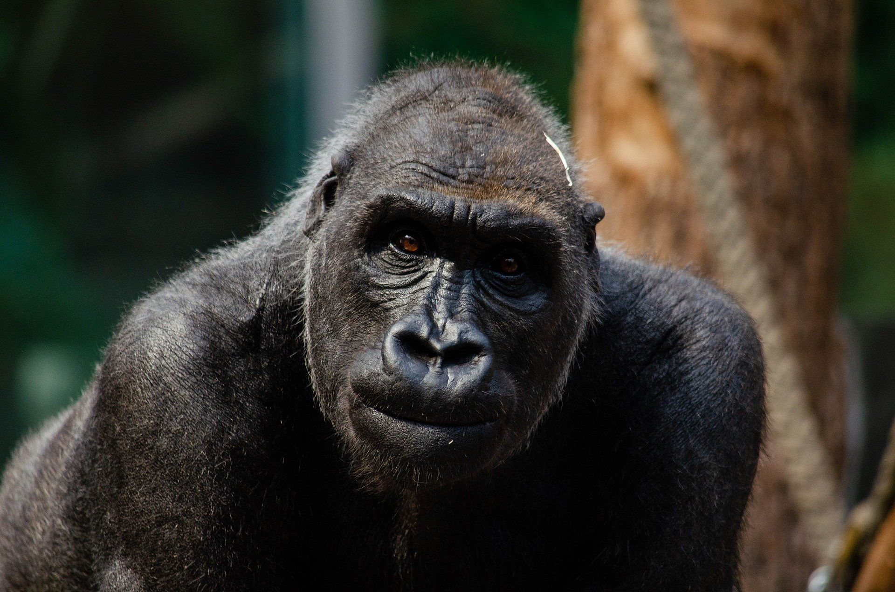

You can discover more about yourself at the same time you're discovering more about the places you traveled so far to visit. Traveling on your own is fun, challenging, vivid, and exhilarating. Realizing that you have what it takes to be your own guide is a thrill known only to solo travelers.

Getting away from home gives you the opportunity to reflect on your life. You have the needed time and space to let your mind wander and take stock. Traveling is one of the best ways to learn more about yourself. Every day traveling brings a new set of issues and opportunities. The way you handle those also gives you insight into who you are. You’ll come home knowing yourself better, and with a fresh perspective on what you want out of life. The experience will change your life.
Traveling is about more than history; traveling is about enriching your own life. It’s about making memories, creating life-long friendships, and so much more. As you grow old, you will be grateful for the days that you took to travel and try new things. Those chances aren’t always there, so take the chances you do have to travel and explore. Be adventurous and feed your soul with memories and good times.
